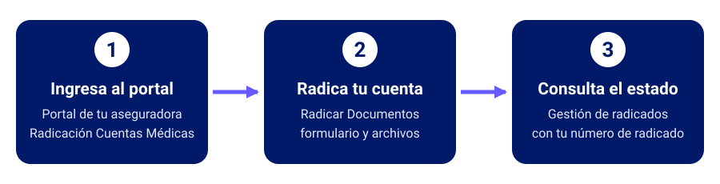

Guía De Radicacion Paso A Paso
Selecciona Tu Perfil Para Ver El Procedimiento Correspondiente
Elige tu perfil
El procedimiento cambia según quién factura y ante qué aseguradora radica. Elige tu caso para ver la guía completa.
La ruta de radicación en tres pasos
Sea cual sea tu perfil, el recorrido en Aquarius es el mismo de principio a fin.

- Ingresa al portal. Entra al portal de tu aseguradora, completa el doble factor de autenticación y abre Radicación Cuentas Médicas.
- Radica tu cuenta. Elige Radicar Documentos, selecciona la serie que corresponde a tu rol, diligencia el formulario y carga tus archivos.
- Consulta el estado. Al finalizar, Aquarius genera un número de radicado con su fecha y hora. Con ese número sigues tu cuenta en Gestión de radicados.
Antes de radicar: lo que necesitas
- Pertenecer a la red de prestadores de la aseguradora ante la que radicas.
- Tener acceso al portal y completar el doble factor de autenticación.
- Si estás obligado a facturar electrónicamente, enviar la representación gráfica y el XML por tu operador de facturación electrónica al buzón corporativo de la aseguradora.
- Tener listos tus archivos: la factura, los anexos y, si aplica, el RIPS y el CUV. La página Preparar archivos te dice cómo.
- Contar con una buena conexión a internet: de ella depende un cargue rápido.
¿Hasta cuándo puedo radicar cada mes?
Cada aseguradora tiene su propia ventana de radicación. Estas son las que rigen según tu perfil:
| Perfil | Ventana de radicación | Si el último día cae en fin de semana o festivo |
|---|---|---|
| Médico prestador (Colmédica) | Del 1 al 15 de cada mes | Se habilita un día hábil adicional |
| IPS de Colmédica | Del 1 al 15 de cada mes | Se habilita un día hábil adicional |
| IPS de Aliansalud, evento | Del 1 al 20 de cada mes | Se adelanta al día hábil anterior |
| IPS de Aliansalud, cápita triangulación | Del 1 al 10 de cada mes | Se adelanta al día hábil anterior |
Si radicas después de la fecha de corte, la cuenta queda procesada con fecha del
primer día hábil del mes siguiente, y el aplicativo te muestra un aviso
informativo.